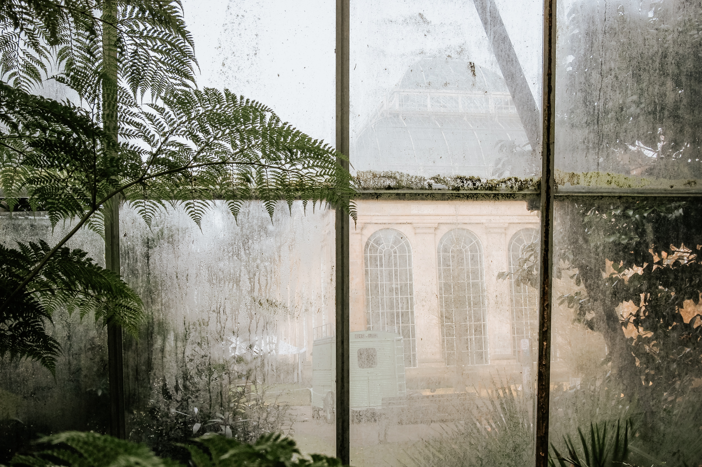

- 수목원소개
- 방문안내
- 관람안내
- 개인/단채 체험
- 고객센터
- 공지사항

1.이용요금
- 평일 : 8,000원
- 주말/공휴일 : 10,000
2.교통안내
- 버스 : 터미널(서울 또는 지방 터미널 등)에서 출발하여 양평 터미널 도착
- 지하철 : 용산역 또는 청량리역에서 출발하여 용문역 도착
- 택시 : 양평 터미널이나 용문역에서 택시 이용
3.관람 유의사항
※ 수목원은 자연과 더불어 사는 우리 인간에게 매우 소중한 존재입니다.
식물이나 시설을 훼손하거나 타인에게 방해가 되는 행동은 삼가시기 바랍니다.
방문해주신 모든 분께 감사드립니다.^^